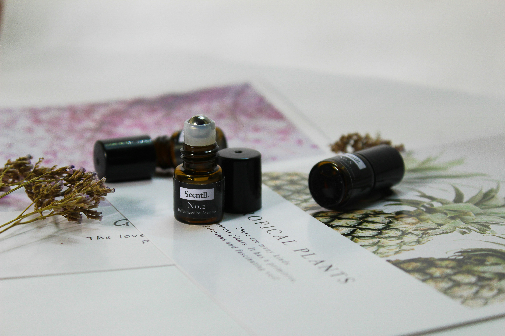
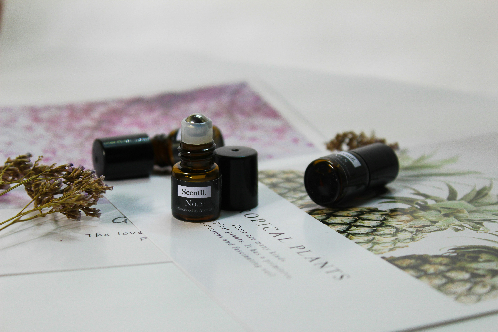
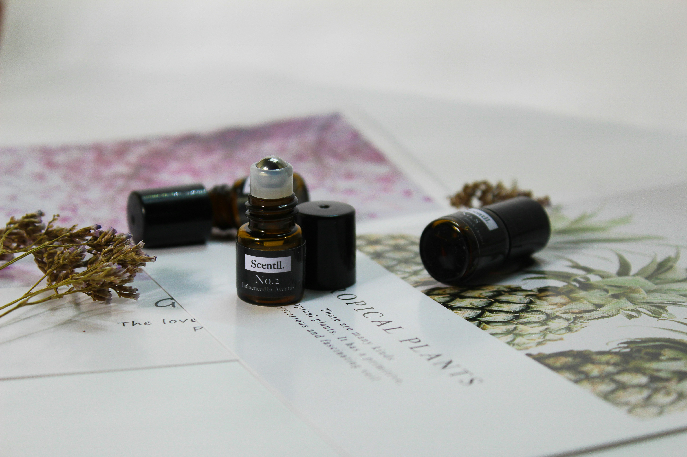

 



The Scent Journal
Chronicles of our olfactory journey and creative process
Chronicles of our olfactory journey and creative process
12 March
Today, I delved into our family archives—yellowed letters, faded fabric swatches, and a hand-drawn map of our ancestral Côte d'Azur estate. A single sprig of flowering jasmine pressed between pages released a whisper of sun-warmed petals. I knew at once that this will be the heart of our new bespoke creation: bright, intoxicating, and timeless.
15 March
Ingredients Blended: Calabrian bergamot, Sicilian neroli, pink peppercorn
In a silver bowl, I combined hand-harvested bergamot oil with a few drops of neroli. The first waft is a breath of Mediterranean morning, crisp and sparkling. A pinch of pink peppercorn adds a playful warmth—like the first rays of sun dancing across dewy blossoms.
20 March
Ingredients Blended: Jasmine grandiflorum, Bulgarian rose absolute, iris butter
The jasmine pressed from my grandmother's journal unfurls now in full bloom. I layer it with velvety rose absolute, its petals still whispering courtly soirées under crystal chandeliers. Finally, a touch of iris butter—regal, powdery, almost secret—binds them with quiet elegance. This is the soul of Maison de Souveraine: gracious, poised, and infinitely feminine.
25 March
Ingredients Blended: Mysore sandalwood, Haitian vetiver, ambergris tincture
As dusk falls, I ground Mysore sandalwood into a smoky heart, then weave in Haitian vetiver's earthy complexity. A tincture of ambergris—rare and ocean-borne—gives a luminous, animalic glow. These base notes linger on the skin like a cherished memory, grounding the florals in deep, resonant warmth.
30 March
After weeks of nurturing these accords, I uncork the vial. On my wrist, the perfume opens as a living portrait: the brightness of morning, the grace of heritage blooms, and the depth of twilight's embrace. Each sniff tells a chapter of our lineage—a legacy reborn in scent.
"Magic of Olfactory Portrait" is complete. It is more than a perfume; it is Maison de Souveraine's story, distilled into a single, bespoke bottle.